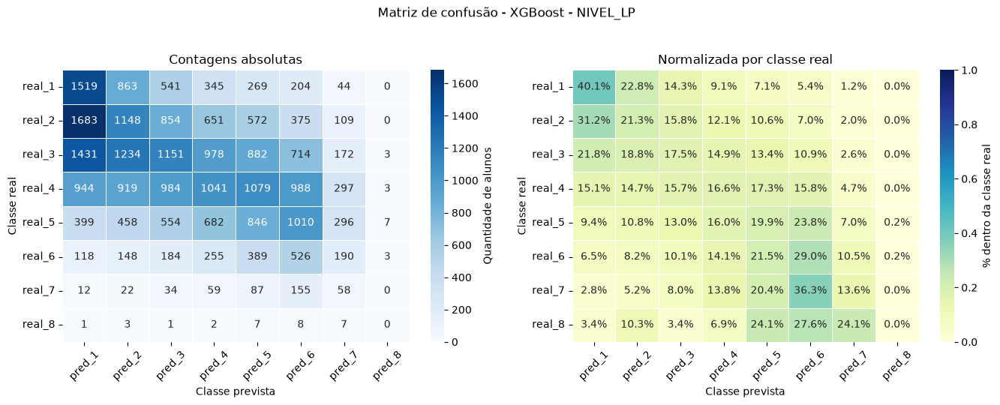
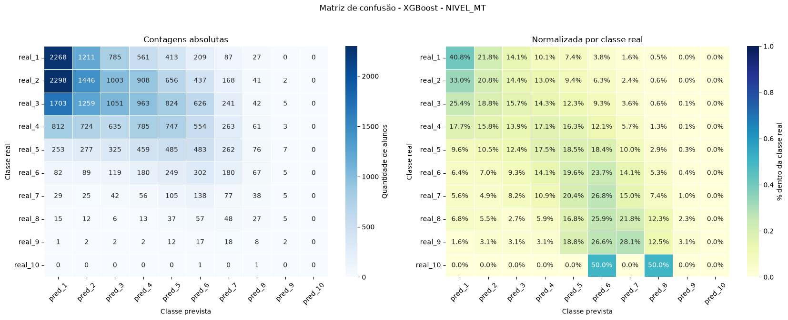

Machine Learning aplicado aos microdados SAEB 2023
Predição de Desempenho Escolar
Classificação dos níveis de proficiência em Língua Portuguesa e Matemática para estudantes do 3º/4º ano do Ensino Médio.
Ana Caroline Souza Lira
Daniel Goulart Camacho Gonçalves
Fernando Giongo
Theo Luigi
João Gabriel Lourenço Marques
15 minutos, cinco perguntas
Base: microdados SAEB 2023
O projeto combina informações do aluno, da direção e da escola para estimar níveis de proficiência.
- TS_ALUNO_34EM: proficiência e questionário socioeconômico.
- TS_DIRETOR: gestão, infraestrutura e organização escolar.
- TS_ESCOLA: indicadores agregados da unidade escolar.
- Junção principal por
ID_ESCOLA, respeitando a série quando necessário.
1,51 mi
registros após filtros iniciais
80
colunas na base de modelagem
SAEB
escala oficial de proficiência
Base usada na modelagem
Após filtros, imputações e remoção do nível 0, a execução final usa uma amostra estratificada de 20% para viabilizar treinamento com validação cruzada.
NIVEL_LP
Mesmo com 20% da base, as classes extremas continuam pequenas:
LP nível 8 tem 206 exemplos; MT nível 10 tem 14 exemplos.
Desequilíbrio após filtro
LP maior classe45.959Nível 3
LP menor classe206Nível 8
MT maior classe48.715Nível 2
MT menor classe14Nível 10
Tratamento do dataset
Filtrar registros inválidos
Removemos ausências de prova, proficiência inválida, questionários não respondidos e escolas fora do escopo.
Normalizar respostas
Valores como *, . e F viram ausentes. Respostas ordinais e booleanas são convertidas quando há sentido semântico.
Preservar informação útil
Quando não há diretor associado, mantemos um marcador de ausência em vez de descartar automaticamente o aluno.
Imputar dados faltantes
Usamos mediana para numéricas e moda para categóricas, incluindo regras agrupadas por município/UF quando apropriado.
Engenharia e imputação
Conversões semânticas
- Questões booleanas: alternativas A/B viram 0/1.
- Questões ordinais: respostas de concordância/adequação viram escala numérica normalizada.
- Questões nominais permanecem categóricas para one-hot encoding.
Ausentes explícitos
*,.,Fe vazio são tratados como ausentes.- Dados de diretor ausentes preservam sinal via indicador de ausência.
- Valores ausentes não são removidos em massa antes do pipeline.
Imputação no notebook
- Médias escolares: mediana por UF ou mediana global.
- Questionários numéricos: mediana por grupo quando aplicável.
- Categóricas: moda por município/UF ou moda global.
Imputação no pipeline
- Numéricas:
SimpleImputer(strategy="median"). - Categóricas:
most_frequent. - Novas categorias:
OneHotEncoder(handle_unknown="ignore").
O que o modelo prevê?
Língua Portuguesa
Classes ativas: níveis 1 a 8.
1234
5678
Matemática
Classes ativas: níveis 1 a 10.
12345
678910
Importante: removemos o nível 0 antes da modelagem e tratamos os níveis
como classes distintas. Um erro entre níveis vizinhos ainda conta como erro completo.
Distribuição dos alvos ativos
NIVEL_LP
126.490
237.750
345.959
443.781
529.766
612.687
72.987
8206
NIVEL_MT
138.926
248.715
347.001
432.086
518.389
68.908
73.601
81.543
9443
1014
Pipeline sem vazamento
Base tratada
Amostra estratificada 20%
Remoção de vazamento
Pipeline sklearn
GridSearchCV
Sem vazamento
Saem proficiências brutas, médias escolares ligadas ao alvo, identificadores e os próprios alvos.
Pré-processamento
Mediana + escala para numéricas; moda + one-hot para categóricas.
Validação
StratifiedGroupKFold, agrupando por escola para evitar memorizar unidades escolares.
O que entra no modelo?
Entram como preditores
Respostas do questionário, variáveis socioeconômicas, características da escola e variáveis administrativas sem ligação direta com o alvo.
Removidas por vazamento
PROFICIENCIA_LP_SAEB, PROFICIENCIA_MT_SAEB, MEDIA_EM_LP, MEDIA_EM_MT, níveis derivados e médias de nível.
Usada só para grupos
ID_ESCOLA não é feature; ela define grupos no StratifiedGroupKFold, reduzindo memorização de escolas.
| Tipo | Tratamento | Motivo |
|---|---|---|
| Numéricas | Mediana + StandardScaler |
Compatível com KNN/LogReg e robusto a outliers. |
| Categóricas | Moda + OneHotEncoder |
Evita impor ordem artificial às alternativas. |
| Alvo | LabelEncoder interno |
Permite XGBoost e preserva rótulos originais na saída. |
Modelos avaliados
A seleção usa F1-macro, porque acurácia pode favorecer classes frequentes em dados desbalanceados.
Validação e busca de hiperparâmetros
Protocolo
- Separação externa com
StratifiedGroupKFolde até 7 splits. - Primeiro fold externo fica como teste.
GridSearchCVroda nos dados restantes com até 3 splits internos.- Critério de seleção:
f1_macro. - Pipeline final é reajustado na base completa de modelagem.
| Modelo | Grid avaliado |
|---|---|
| KNN | n_neighbors = 3, 5, 7 |
| LogReg | C = 0.1, 1.0, 10.0 |
| Árvore | max_depth = 5, 10, 20 |
| Random Forest | n_estimators = 100, 300 |
| XGBoost | max_depth = 4, 8; lr = 0.05, 0.1 |
Execução sequencial com
GRID_N_JOBS=1, checkpoint em artefatos/ e retomada por combinação alvo/modelo.
Resumo dos resultados
Melhor F1-macro em LP
17,5% XGBoost · acurácia 22,1%Melhor F1-macro em MT
14,9% XGBoost · acurácia 22,6%Baseline aleatório
12,5% / 10,0% LP com 8 classes · MT com 10 classes| Alvo | Modelo | Acurácia teste | F1-macro teste | Melhores parâmetros |
|---|---|---|---|---|
| LP | XGBoost | 22,1% | 17,5% | learning_rate=0.1, max_depth=8 |
| MT | XGBoost | 22,6% | 14,9% | learning_rate=0.1, max_depth=8 |
Desempenho por alvo e modelo
| Alvo | Modelo | Acc. validação | F1 validação | Acc. teste | F1 teste | Melhor parâmetro |
|---|---|---|---|---|---|---|
| LP | XGBoost | 22,55% | 17,72% | 22,05% | 17,54% | lr=0.1, depth=8 |
| LP | Random Forest | 24,85% | 14,82% | 24,76% | 14,92% | n=100 |
| LP | Árvore | 19,10% | 14,75% | 19,11% | 14,82% | depth=20 |
| LP | Regressão | 17,69% | 14,57% | 17,58% | 14,58% | C=1.0 |
| LP | KNN | 21,34% | 14,09% | 21,43% | 14,15% | k=7 |
| MT | XGBoost | 22,58% | 15,20% | 22,59% | 14,88% | lr=0.1, depth=8 |
| MT | Regressão | 20,01% | 12,77% | 20,55% | 12,94% | C=0.1 |
| MT | Árvore | 18,89% | 11,90% | 18,90% | 11,98% | depth=20 |
| MT | KNN | 20,76% | 11,49% | 21,04% | 11,33% | k=3 |
| MT | Random Forest | 25,08% | 10,41% | 25,55% | 10,82% | n=100 |
Acurácia maior nem sempre significa modelo melhor: Random Forest em MT tem maior acurácia, mas pior F1-macro, indicando concentração nas classes frequentes.
F1-macro por modelo
LP · XGBoost
17,5%
LP · Random Forest
14,9%
LP · Árvore
14,8%
MT · XGBoost
14,9%
MT · Regressão
12,9%
MT · Random Forest
10,8%
XGBoost · Língua Portuguesa
O lado esquerdo mostra contagens absolutas; o direito mostra percentuais por classe real. A diagonal indica acertos.

XGBoost · Matemática
O desbalanceamento é mais severo em Matemática, especialmente nos níveis altos, reduzindo recall e F1-macro.

Resultado: limitado, mas acima do acaso
Os modelos encontram sinal estatístico real nos dados contextuais, mas não o suficiente para uma classificação individual precisa.
- Melhor resultado supera o baseline aleatório uniforme.
- F1-macro ainda é baixo, principalmente por classes raras.
- Erros entre níveis vizinhos ainda contam como erro completo.
Hipótese principal
Questionários e contexto escolar explicam tendências gerais de desempenho, mas não capturam diretamente domínio de conteúdo, trajetória individual, motivação no dia da prova ou fatores pedagógicos finos.
Como melhorar?
Obrigado.